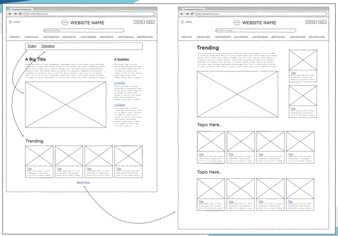

Asian American Women's Coalition Website Redesign
Team Role
UI Designer & Researcher
Timeline
Nov 2025 - Dec 2025
Project Type
HCI Research & UI Design
Tools
Balsamiq
Overview
Over a one month time frame, I worked in a group alongside Jayla Scott, Kai Owens, and Isha Patel to suggest improvements to the Britannica website through HCI and UI/UX design principles.
Phase 01
Research
What is Britannica?
Britannica is a global online learning and reading encyclopedia which covers new and trending topics in the world around us. This website is designed for a very broad audience, including students, educators, researchers, the general public, etc.
What are Nielsen's 10 Usability Heuristics?
Nielsen's 10 Usability Heuristics are crucial when designing anything in life, but especially in designing websites. It ensures a more engaging, fulfilling, and cohesive website experience for the user. My teammates and I picked a few of his Usability Heuristics that could be improved on Britannica's websites and presented wireframes to illustrate the improvement.

Nielsen's 10 Usability Heuristics
Phase 02
Wireframes
Principal 01: Discoverability
Changing “Editor Picks” to “Your Picks” by using survey questions or checkboxes
Pain Points
- Generic content; not specific to user
- Resulting in irrelevant information overload and low engagement
Why is this an improvement?
- Makes relevant content easy to find
- Increases productivity and personalization
- Increases user engagement which would boost loyalty

Change popular section into a carousel for engagement and aesthetics
Principal 02: Gulf of Evaluation
Adding a "Read More" or "Learn More" Button To Home Page Articles
Pain Points
- Hard to find a variety of articles
- Difficult to find articles related to trending items on the front page
- Users are unsure if every article contains the topic they’re searching for
Why is this an improvement?
- Increase visitor engagement
- Allow for people to find more trending articles
- Allow for users to immediately evaluate if their search was satisfactory

Add “read more” or “learn more” buttons to increase visitor engagement
Learning
Reflection
Learning the core HCI principles, like Nielsen's 10 Usability Heuristics, was essential in suggesting changes to Britannica for an enhanced user experience. In addition, I will carry every learned HCI and design principle into my own UI/UX designs as it will serve as an immovable foundation for my design process.